Dokumentacja aplikacji KRS 2.0
1. Podstawowe za�o�enia Krajowego Rejestru S�dowego
Podstawowym za�o�eniem KRS-u jest wzmocnienie pewno�ci obrotu poprzez stworzenie jednolitego, centralnego rejestru, kt�ry wywo�uje okre�lone skutki prawne zar�wno dla przedsi�biorc�w jak i uczestnik�w obrotu.
Z perspektywy w�adz pa�stwowych KRS jest filtrem, kt�ry ma przynajmniej z za�o�enia, nie dopu�ci� do dzia�ania nieuczciwych przedsi�biorc�w czy zak�adania fikcyjnych sp�ek. Ponadto sprzyja rozwojowi gospodarczemu zapewniaj�c przejrzysto�� informacji dotycz�cych podmiot�w bior�cych udzia� w obrocie gospodarczym i r�wne warunki dost�pu do rejestru.
Je�eli chodzi o przedsi�biorc�w to poprzez wpis do rejestru zyskuj� sw�j statut, a dane dotycz�ce ich sp�ki s� dost�pne publicznie. Pojawienie si� podmiotu w wyszukiwarce KRS �wiadczy o tym, �e spe�ni� okre�lone prawem wymagania i jeste�my w stanie sprawdzi�, mi�dzy innymi: jego NIP, REGON (je�eli wcze�niej ich nie posiadali�my), dok�adny adres, dat� wpisu do KRS, organy reprezentacji, przedmiot dzia�alno�ci. Ponadto mo�emy sprawdzi� informacj� w dziale 4 na temat zaleg�o�ci i wierzytelno�ci tego podmiotu i zweryfikowa� czy chcemy wsp�pracowa� z danym przedsi�biorc�, b�d� podj�� u niego zatrudnienie.
Informacje dodatkowe, kt�rych nie sprawdzimy w KRS, a kt�re mog� okaza� si� przydatne przy weryfikacji danego podmiotu s� dost�pne na stronie: http://przeswietl.pl Mo�emy tam sprawdzi� m.in wszystkie firmy znajduj�ce si� pod danym adresem, powi�zania jakie ma dana firma, czy histori� jej dzia�alno�ci.
G��wne zasady KRS
Zgodnie z teori� profesora Kidyby mo�na wyr�ni� pi�� zasad w oparciu, o kt�re funkcjonuje KRS :
1. Jawno�� � dzi�ki tej zasadzie ka�dy ma prawo dost�pu do danych zawartych w rejestrze za po�rednictwem Centralnej Informacji oraz ma prawo otrzymywa� drog� elektroniczn� po�wiadczone odpisy, wyci�gi, za�wiadczenia i informacje z Rejestru.
2. Domniemanie znajomo�ci tre�ci wpisu � ta zasada wi��e si� z zasad� jawno�ci. Oznacza, �e od dnia og�oszenia wpisu w Monitorze S�dowym nie mog� zas�ania� si� nieznajomo�ci� og�oszonych wpis�w.
3. Domniemanie prawdziwo�ci i zasady dobrej wiary � jest to do�� prosta i logiczna zasada, kt�ra pozwala mi zak�ada�, �e dane kt�re znajduj� w rejestrze s� prawdziwe.
4. Ka�dy podmiot zarejestrowany w KRS otrzymuje sw�j unikatowy numer ( za wyj�tkiem wpisu do rejestru d�u�nik�w niewyp�acalnych).
(Joanna Kosterska - Absolwentka prawa Uniwersytetu Wroc�awskiego)
KRS s�u�y tak�e jako skuteczne narz�dzie windykacyjne. W szczeg�lno�ci dzi�ki informacjom zawartym w KRS mo�emy ustali�, czy okre�lona osoba jest wsp�lnikiem sp�ki, jej akcjonariuszem lub wchodzi w sk�ad organ�w takiego podmiotu. Dane te stanowi� cenne �r�d�o informacji dla wierzyciela. Ponadto w przypadku, gdy d�u�nik nie ma maj�tku lub go skutecznie ukrywa, istnieje mo�liwo�� wpisania takiego d�u�nika do rejestru d�u�nik�w niewyp�acalnych co tak�e ma silne oddzia�ywanie na takiego d�u�nika.
(Jaros�aw Olejarz SerwisPrawa.pl)
2. Opis aplikacji
KRS 2.0 jest aplikacj� umo�liwiaj�ca wy�wietlanie szczeg�owych danych dotycz�cych organizacji zarejestrowanych w Krajowym Rejestrze S�dowym przedstawionych poni�ej.
- Wy�wietlanie organizacji zarejestrowanych w KRS (z podzia�em na wojew�dztwa)
- Wy�wietlanie informacji o organizacji (NIP, KRS, adres, nazw�, itp.)
- Podzia� na typ formy prawnej (organizacja biznesowa, pozarz�dowa, samodzielne publiczne zak�ady opieki zdrowotnej)
-
- Wy�wietlanie listy za�o�ycieli organizacji
- Wy�wietlanie listy os�b pe�ni�cych nadz�r nad organizacj�
- Wy�wietlanie listy wsp�lnik�w firmy
- Monitorowanie emisji akcji organizacji
- Wy�wietlanie listy firm, w kt�rych organizacja ma udzia�y
- Wy�wietlanie listy oddzia��w firmy
3. Dzia�anie i obs�uga aplikacji
Po uruchomieniu aplikacji oczom u�ytkownika ukazuje si� ekran startowy na kt�rym znajduje si� sze�� przycisk�w kryj�cych g��wne opcje programu.
Opcja "WYSZUKIWARKA" pozwala na odnajdywania firm za pomoc� ich nazwy lub numeru KRS
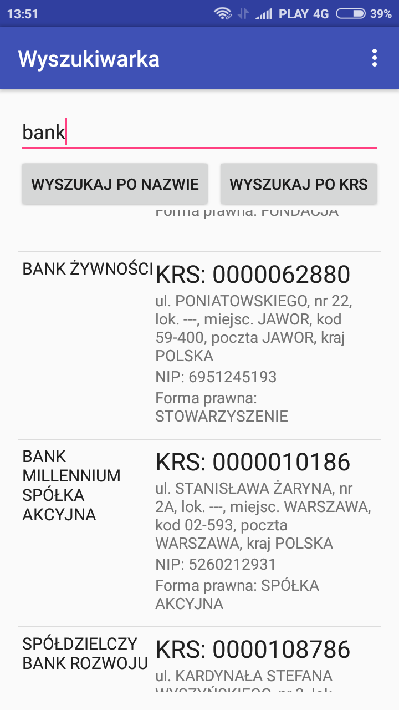
Opcja "AKCJE I UDZIA�Y" pozwala na pozyskanie informacji dotycz�cy ch AKCJI UDZIA��W oraz ODZDZIA��W wyszukiwanego przedsi�biorstwa.
Aby wy�wietli� ��dane informacje nale�y wyszuka� numer ID interesuj�cego nas przedsi�biorstwa poprzez wpisanie jego nazwy i klikni�cie przycisku "GENERUJ ID" a nast�pnie przepisanie wy�wietlonego numeru ID we wskazane pole.
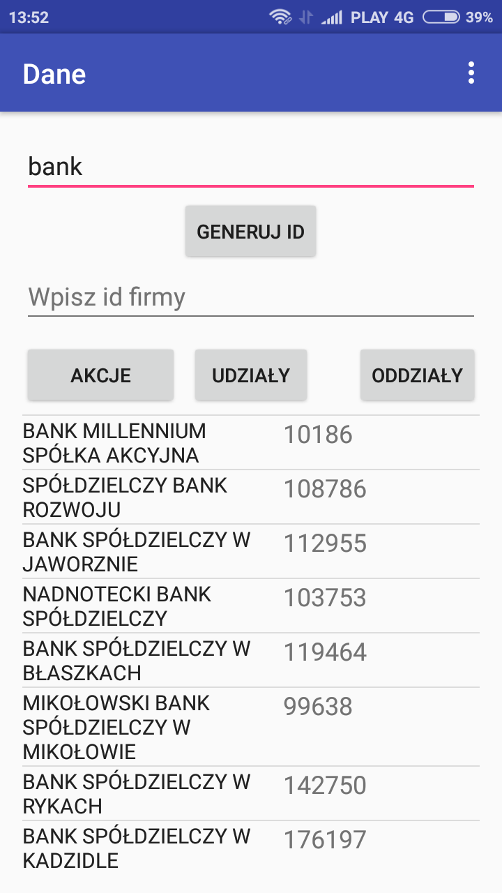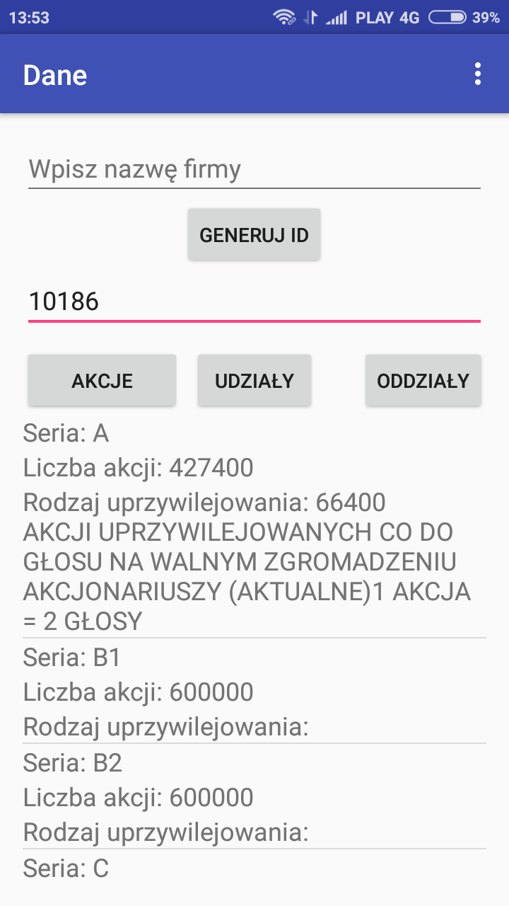
Opcja "Wsp�lnicy i nadzorcy" jest rozsze�eniem opcji "AKCJE I UDZIA�Y" wi�c pozyskanie ��danych informacji odbywa si� w spos�b analogiczny.
Opcja "PODZIA� FORMA PRAWNA" wy�wietla przedsi�biorstwa o danym typie formy prawnej, w podziale na:
1 - Organizacje biznesowe
2 - Organizacje pozarz�dowe
3 - Samodzielne publiczne zak�ady opieki zdrowotnej
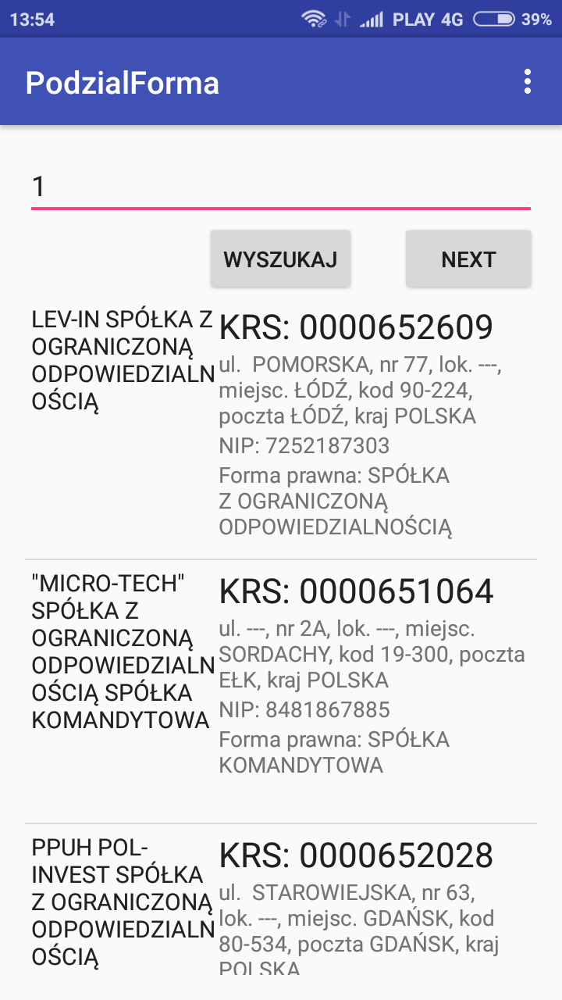
Opcja "PODZIA� NA WOJEW�DZTWA" pozwala na wyci�gni�cie informacji dotycz�cej firm zarejestrowanych w danym wojew�dztwie.
Je�eli u�ytkownik aplikacji wprowadzi nieodpowiedni format/fraz�/parametr zostanie o tym poinformowany komunikatem.
Ostatnia opcja aplikacji przedstawia informacje o autorach projektu.
4. Opis klas
4.1 Klasa MainActivity
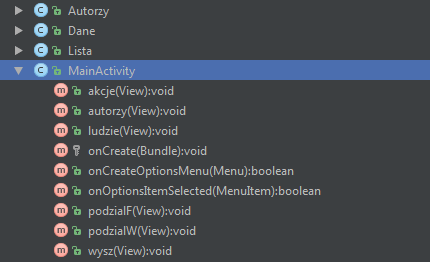
Klasa ta zawiera nast�puj�ce metody:
� void akcje(View) - przekierowywuje do klasy Dane
� void autorzy(View) - przekierowywuje do klasy Autorzy
� void ludzie(View) - przekierowywuje do klasy Lista
� void podzialF(View) - przekierowywuje do klasy PodzialForma
� void podzialW(View) - przekierowywuje do klasy PodzialWojew
� void wysz(View) - przekierowywuje do klasy Wyszukiwarka
� void onCreate(Bundle)
� boolean onCreateOptionsMenu(Menu)
� boolean onOptionsItemSelected(MenuItem)
4.2 Klasa Autorzy
Klasa ta zawiera nast�puj�ce metody:
� void onCreate(Bundle)
� boolean onCreateOptionsMenu(Menu)
� boolean onOptionsItemSelected(MenuItem)
4.3 Klasa Dane
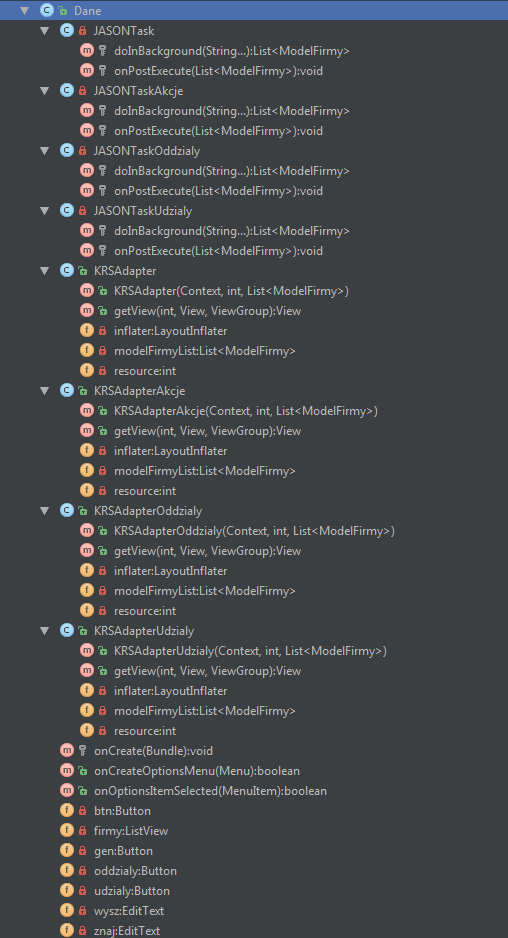
Klasa ta zawiera nast�puj�ce metody:
� void onCreate(Bundle)
� boolean onCreateOptionsMenu(Menu)
� boolean onOptionsItemSelected(MenuItem)
Oraz pola:
� Button btn - przycisk s�u��cy do wy�wietlenia akcji firmy
� Button oddzialy - przycisk s�u��cy do wy�wietlenia oddzia��w firmy
� Button udzialy - przycisk s�u��cy do wy�wietlenia udzia��w firmy
� Button gen - przycisk s�u��cy do wy�wietlenia ID firmy
� EditText wysz - pole pobieraj�ce tekst od u�ytkownika
� EditText znaj - pole pobieraj�ce tekst od u�ytkownika
� ListView firmy - lista firm
Klasa zawiera nast�puj�ce podklasy:
� JSONTask - odpowiada za pobieranie ID firmy
� JSONTaskAkcje - odpowiada za pobieranie akcji firmy
� JSONTaskOddzialy - odpowiada za pobieranie oddzia��w firmy
� JSONTaskUdzialy - odpowiada za pobieranie udzia��w firmy
� KRSAdapter - odpowiada za wy�wietlenie ID firmy
� KRSAdapterAkcje - odpowiada za wy�wietlenie akcji firmy
� KRSAdapterOddzialy - odpowiada za wy�wietlenie oddzia��w firmy
� KRSAdapterUdzialy - odpowiada za wy�wietlenie udzia��w firmy
4.4 Klasa Lista
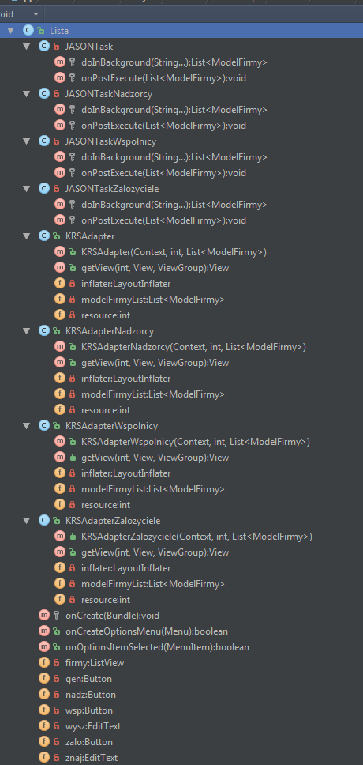
Klasa ta zawiera nast�puj�ce metody:
� void onCreate(Bundle)
� boolean onCreateOptionsMenu(Menu)
� boolean onOptionsItemSelected(MenuItem)
Oraz pola:
� Button zalo - przycisk s�u��cy do wy�wietlenia zalozycieli firmy
� Button nadz - przycisk s�u��cy do wy�wietlenia nadzorc�w firmy
� Button wsp - przycisk s�u��cy do wy�wietlenia wsp�lnik�w firmy
� Button gen - przycisk s�u��cy do wy�wietlenia ID firmy
� EditText wysz - pole pobieraj�ce tekst od u�ytkownika
� EditText znaj - pole pobieraj�ce tekst od u�ytkownika
� ListView firmy - lista firm
Klasa zawiera nast�puj�ce podklasy:
� JSONTask - odpowiada za pobieranie ID firmy
� JSONTaskZalozyciele - odpowiada za pobieranie nazwisk za�o�ycieli firmy
� JSONTaskNadzorcy - odpowiada za pobieranie nazwisk nadzorc�w firmy
� JSONTaskWspolnicy - odpowiada za pobieranie nazwisk wsp�lnik�w firmy
� KRSAdapter - odpowiada za wy�wietlenie ID firmy
� KRSAdapterZalozyciele - odpowiada za wy�wietlenie nazwisk za�o�ycieli firmy
� KRSAdapterNadzorcy - odpowiada za wy�wietlenie nazwisk nadzorc�w firmy
� KRSAdapterWspolnicy - odpowiada za wy�wietlenie nazwisk wsp�lnik�w firmy
4.5 Klasa PodzialForma
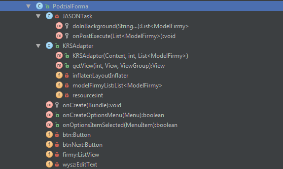
Klasa ta zawiera nast�puj�ce metody:
Klasa ta zawiera nast�puj�ce metody:
� void onCreate(Bundle)
� boolean onCreateOptionsMenu(Menu)
� boolean onOptionsItemSelected(MenuItem)
Oraz pola:
� Button btn - przycisk s�u��cy do wy�wietlenia firm o danym typie formy prawnej
� Button btnNext - przycisk s�u��cy do wy�wietlenia kolejnej strony
� EditText wysz - pole pobieraj�ce tekst od u�ytkownika
� ListView firmy - lista firm
Klasa zawiera nast�puj�ce podklasy:
� JSONTask - odpowiada za pobieranie danych firmy
� KRSAdapter - odpowiada za wy�wietlenie danych firmy
4.5 Klasa PodzialWojew
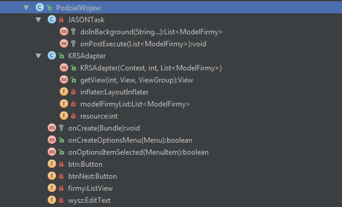
Klasa ta zawiera nast�puj�ce metody:
� void onCreate(Bundle)
� boolean onCreateOptionsMenu(Menu)
� boolean onOptionsItemSelected(MenuItem)
Oraz pola:
� Button btn - przycisk s�u��cy do wy�wietlenia firm w danym wojew�dztwie
� EditText wysz - pole pobieraj�ce tekst od u�ytkownika
� ListView firmy - lista firm
Klasa zawiera nast�puj�ce podklasy:
� JSONTask - odpowiada za pobieranie danych firmy
� KRSAdapter - odpowiada za wy�wietlenie danych firmy
4.5 Klasa Wyszukiwarka
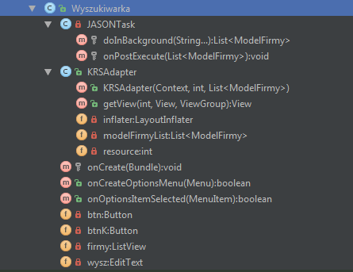
Klasa ta zawiera nast�puj�ce metody:
� void onCreate(Bundle)
� boolean onCreateOptionsMenu(Menu)
� boolean onOptionsItemSelected(MenuItem)
Oraz pola:
� Button btn - przycisk s�u��cy do wy�wietlenia firm podanej nazwie
� Button btnK - przycisk s�u��cy do wy�wietlenia firmy o podanym numerze KRS
� EditText wysz - pole pobieraj�ce tekst od u�ytkownika
� ListView firmy - lista firm
Klasa zawiera nast�puj�ce podklasy:
� JSONTask - odpowiada za pobieranie danych firmy
� KRSAdapter - odpowiada za wy�wietlenie danych firmy
4.6 Klasa ModelFirmy
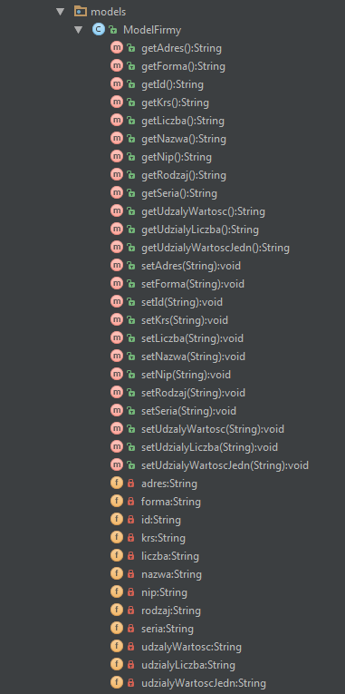
Klasa ta zawiera nast�puj�ce metody:
� String get() - pobiera dane
� void set(String) - ustawia dane